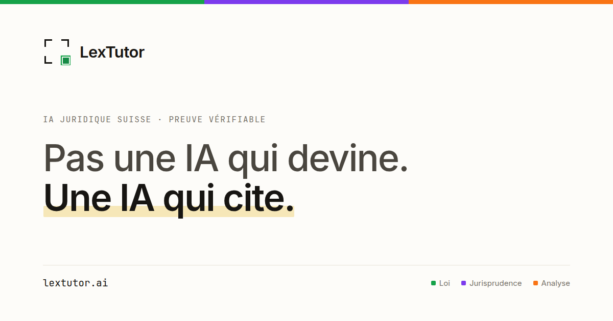
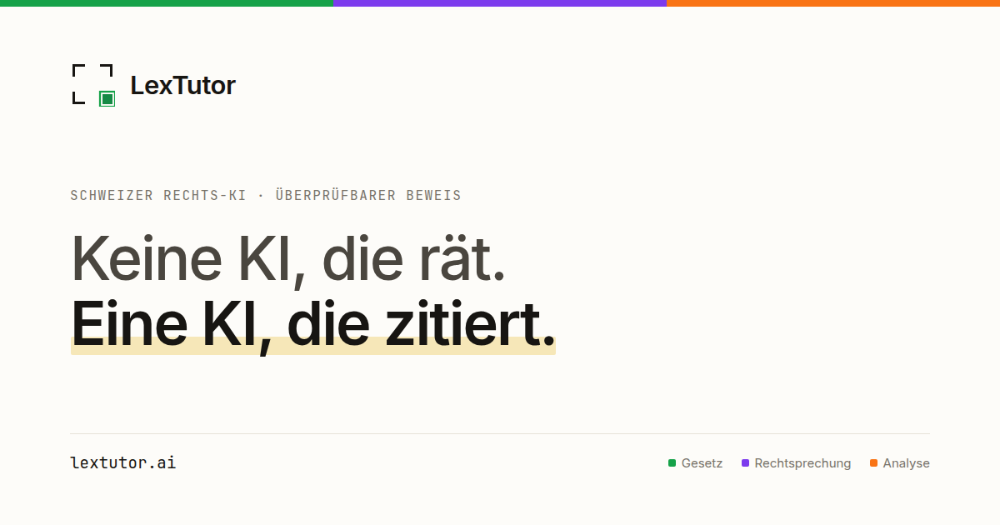
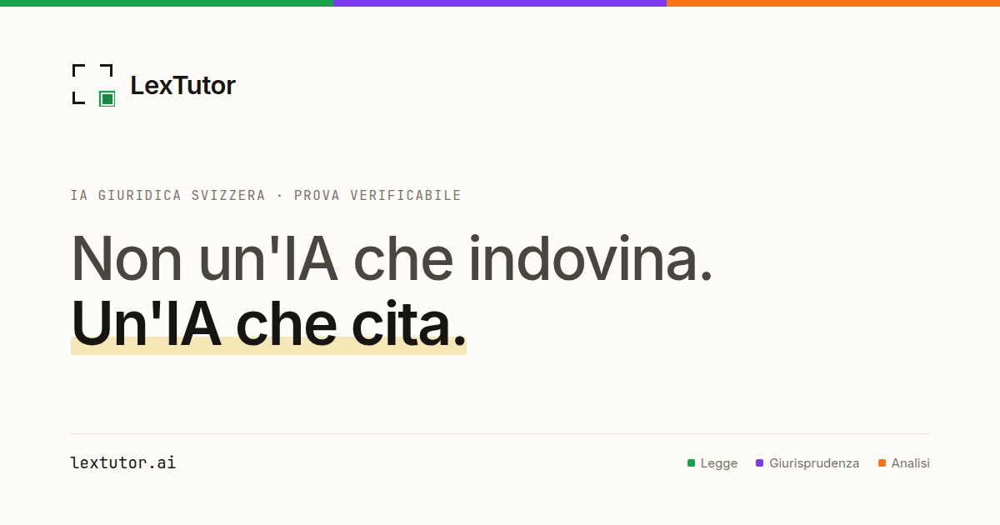
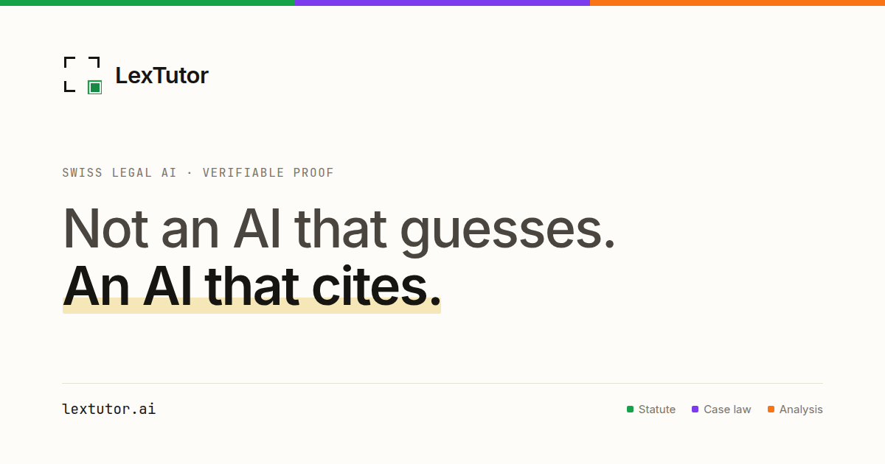

Dossier de décision · équipe
Le site v6 est complet et délibérément invisible. Il vient de recevoir la couche qui le rendrait trouvable, posée mais inactive. Rien ne bascule sans l’accord de l’équipe — ce document existe pour que cet accord se donne sur des faits.
15 août 202644 pages · 11 routes · 4 languesaucune mise en ligne effectuée
Le site existe en entier : onze routes servies en français, allemand, italien et anglais. Il est hébergé sur GitHub Pages et n’est accessible qu’à qui détient le lien.
| Ce qui est mesuré | Valeur |
|---|---|
| Pages servies | 44 (11 routes × 4 langues), 49 Ko en moyenne |
| Qualité de mise en page | 88 vues contrôlées — 0 débordement, 0 cible tactile sous 24 px, 0 erreur console |
| Point de contact | visible sur 88 vues sur 88, mobile compris |
| Liens vers les sources officielles | 12 vers Fedlex, tous ancrés sur l’article exact et dans la langue du lecteur ; 8 vers le Tribunal fédéral |
| Corpus annoncé sur le site | 40 410 articles · 461 661 décisions (mesuré le 14.08.2026) |
| Couverture cantonale publiée | VD 71 040 · GE 64 883 · BE 15 525 · NE 9 000 · JU 1 028 |
| Éditeur déclaré | LexTutor Sàrl, Le Landeron (NE) — IDE CHE-384.170.891 |
Deux choses étaient vraies en même temps, et une seule avait été décidée.
Invisible, c’était voulu : noindex sur les 44 pages et
Disallow: / dans robots.txt. Le site est en revue, pas en vitrine.
Introuvable, personne ne l’avait décidé. Aucune page n’avait de description, d’adresse canonique, de carte de partage ni d’entrée de plan de site. Les déclarations de langue étaient en chemin relatif — les moteurs les ignorent en silence, ce qui a exactement la même forme qu’une absence de déclaration. Un lien partagé sur LinkedIn n’aurait affiché qu’un rectangle vide.
Cette seconde partie est réparée. Elle ne rend rien public : elle rend le site prêt à l’être, le jour où l’équipe le décide.
Quatre choses, et rien d’autre. Aucune ne touche au contenu ni au design.
| Aujourd’hui | Après | |
|---|---|---|
robots.txt | Disallow: / | Allow: / + plan de site déclaré |
| Balise des 44 pages | noindex | index, follow |
| Plan de site | écrit, non déclaré | soumis aux moteurs |
| Cartes de partage | présentes, non récupérables | affichées sur LinkedIn, X, WhatsApp |
Asymétrie à connaître avant de décider
Ouvrir prend une commande. Refermer n’est pas symétrique : une page indexée le reste jusqu’à désindexation, qui demande des semaines. C’est la seule raison pour laquelle ce geste mérite une décision d’équipe plutôt qu’une exécution technique.
Décision A
Le site est prêt techniquement. Ce n’est pas une question technique : c’est le moment où LexTutor devient visible du marché et des concurrents.
Décision B
lextutor.ai ?Le domaine ne sert rien aujourd’hui. Deux voies : le brancher sur GitHub Pages, où le site vit déjà — un fichier et un enregistrement DNS suffisent ; ou le servir depuis l’hébergement Infomaniak existant, ce qui demande un accès dont je ne dispose pas.
Tant que cette question n’est pas tranchée, l’adresse canonique de chaque page désigne l’hébergement actuel. Elle doit désigner l’endroit où la page est réellement servie : la faire pointer ailleurs par anticipation reviendrait à mentir aux moteurs.
Ce qui mérite une décision avant ou peu après l’ouverture. Aucune n’empêche techniquement d’ouvrir.
Vérifié aujourd’hui, mesure à l’appui, pour qu’aucun de ces points ne serve d’objection en réunion.
Contrôlé le 15.08.2026
Ce que verra quiconque partagera un lien LexTutor, une carte par langue. Elles reprennent le geste de l’accueil : le surlignage au marqueur sur la moitié qui affirme, et le filet tricolore qui nomme les trois types de source — loi, jurisprudence, analyse — dans la langue du lecteur.




La bascule tient à une variable. Pour qu’elle ne soit jamais actionnée par inertie — ni par un agent au motif que « tout est prêt » — le générateur refuse de construire une version indexable tant que l’approbation n’est pas nommée.
| Cas | Résultat vérifié |
|---|---|
| Construction normale | noindex sur 44 pages sur 44 |
| Variable d’ouverture seule | refus, code de sortie 1 |
| Variable + approbation nommée | index, follow |
Le motif est écrit dans le code, à côté de la variable, avec sa date et son auteur. Quiconque tenterait la bascule le lit avant de pouvoir agir.